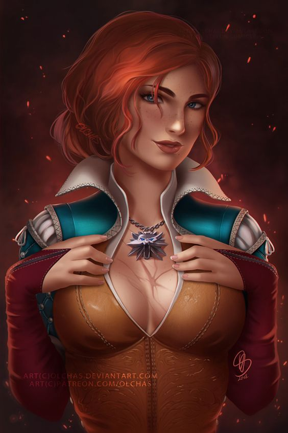

Geralt z Rivii
Przez driady i elfy nazywany Gwynbleidd (ze st. Biały Wilk), znany również jako Rzeźnik z Blaviken. Syn czarodziejki Visenny i najprawdopodobniej wojownika Korina, ukochany Yennefer i przybrany ojciec Ciri, przybrany syn Nenneke.
Cirilla Fiona Elen Riannon
Zwana też Lwiątkiem z Cintry, Dzieckiem Starszej Krwi, Jaskółką (ze st. Zirael) – księżniczka Cintry, córka królewny Pavetty i Duny'ego (Jeża z Erlenwaldu), wnuczka królowej Calanthe, potomkini legendarnej elfiej czarodziejki Lary Dorren i nosicielka Starszej Krwi. Od ojca wywodzi się z cesarskiego rodu var Emreis, a od matki z Cerbinów.
Yennefer z Vengerbergu
Czarodziejka, członkini Rady i Loży, miłość życia Geralta z Rivii i przybrana matka Ciri.Yennefer miała wybuchowy temperament oraz cięty język. Chociaż przez wielu jest uważana za nieprzewidywalną, zarozumiałą oraz wyrachowaną, dla bliskich jej osób potrafiła być ciepła i troskliwa . Cechowała ją odwaga i mądrość. Czarodziejka była bardzo przebiegła i zmyślna, wraz ze sprytem w parze szły niezwykłe uzdolnienia magiczne.
Triss Merigold

Temerska czarodziejka, była doradczyni króla Foltesta, członkini Rady Królewskiej Temerii, a po jej rozwiązaniu Loży. Uczestniczka Bitwy o Wzgórze Sodden. Po III wojnie z Nilfgaardem doradczyni króla Tankreda z Koviru.Merigold była uzdolnioną czarodziejką, jednak nie zdołała opanować mocy Ciri. Znała tajemnicę żywiołów, teleportacji, alchemię i wiedzę tajemną. Jak większość czarodziejek przeszła długoletnie szkolenie i naukę w Aretuzie, akademii magii położonej na wyspie Thanedd.
Zoltan Chivay
Zoltan Chivay – krasnolud, weteran II wojny z Nilfgaardem, przyjaciel Geralta. Ich drogi zeszły się, kiedy Geralt ze swoją drużyną zmierzał z Brokilonu w stronę Jarugi, na południe. Za radą krasnoluda, Geralt, Jaskier i Milva przyłączyli się do kompanii i podążyli na wschód, razem z uciekinierami z Kernow. Właśnie od Zoltana, Geralt dostał swój miecz – sihill.
Julian Alfred Pankratz wicehrabia de Lettenhove
Znany również jako Jaskier – poeta, trubadur, bard oraz najbliższy przyjaciel wiedźmina Geralta. Jaskier jest synem hrabiny de Lettenhove, ma kuzyna Ferranta de Lettenhove (bratanek ojca Jaskra). W czasie głównej akcji sagi ma niespełna czterdzieści lat. Urodzony w 1229 roku. Grywał między innymi na dworach królów Niedamira, Vizimira i Venzlava, jest przyjacielem króla Ethaina z Cidaris (władca bardzo ceni sobie jego ballady).
Płotka
Wierny towarzysz Geralta, jest zawsze przy jego boku, gotowy aż Wiedźmin go zawoła. Biały wilk każdeko swojego wierzchowca nazywał Płotką.